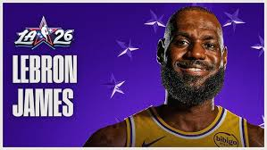

Have you ever wanted to learn more about the greatest to the ever to do it? Have you ever wanted ammunition to prove to Michael Jordan fans that their bald, gambling 'GOAT' isn't really all that? Have you ever wanted to find out just how far the glaze and admiration for a singular human being? If any of those are you, you have to come to the right place. You just happened to stumble across the biggest Lebron fan page on the World Wide Web. Whether you want to admire photos capturing some of his most infamous moments or immerse yourself on a few of the many statistics that embody his greatness, it's up to you!